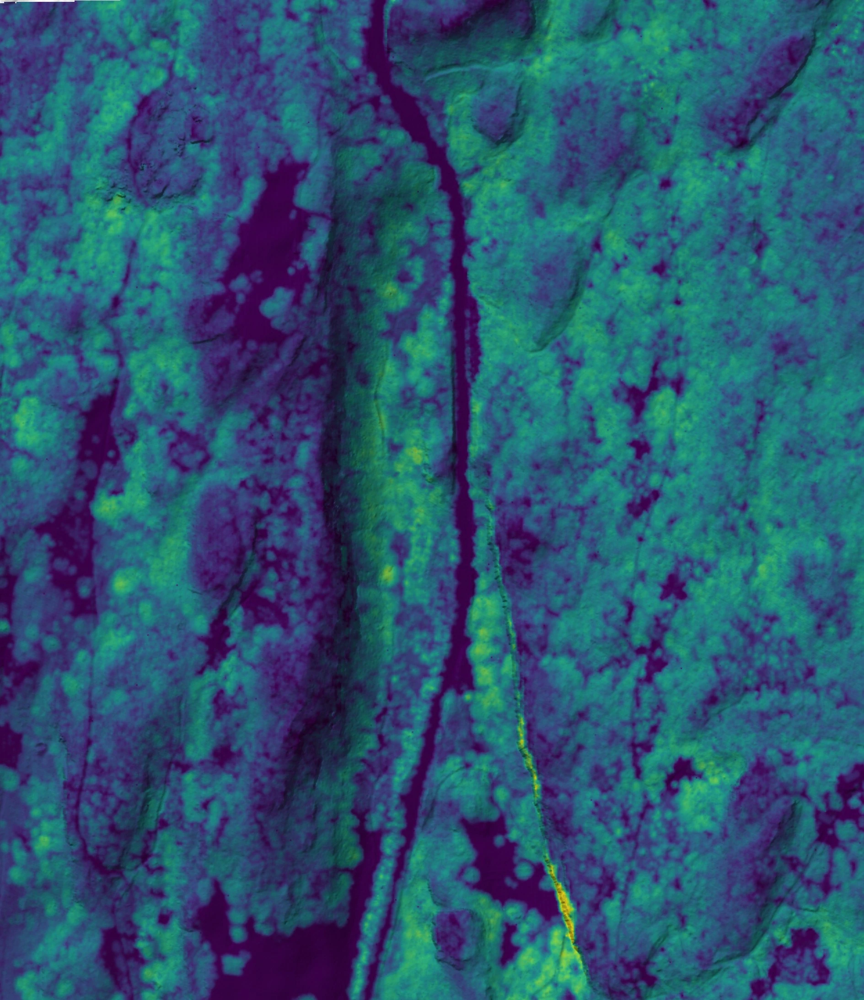
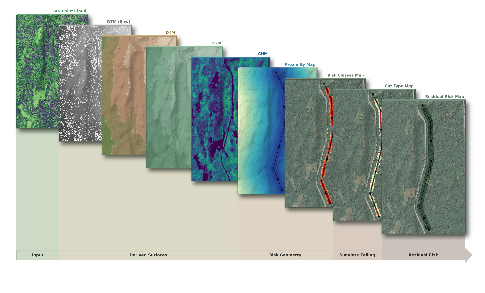

Powerline Vegetation Risk — LiDAR Analysis & Management Scenarios
A LiDAR-based geometric model of tree-fall interference with an HV overhead line — 5-year management scenario comparison
1.Project Overview
Lo studio simula la progettazione di una nuova linea aerea ad alta tensione e ne valuta l'interferenza con la vegetazione forestale circostante. A partire da dati LiDAR viene costruito un modello geometrico del rischio di caduta degli alberi sui conduttori e vengono confrontate tre strategie di gestione (potatura/abbattimento), misurandone il rischio residuo a 5 anni.
2.Strategic Value & Output
La gestione della vegetazione lungo le linee ad alta tensione è una voce di costo rilevante per i gestori di rete e un fattore critico nella prevenzione di guasti e incendi. Il modello produce una mappa di rischio basata sulla geometria reale (altezza della pianta rispetto alla distanza dalla linea), stabilisce la priorità degli interventi e fornisce un confronto quantitativo tra una strategia "a soglia di altezza", una geometrica ed una geometrica previsionale, in termini di rischio residuo e di bosco effettivamente rimosso.
3.Study Area
L'area di studio è un versante boscato di montagna a Padergnone, frazione del Comune di Vallelaghi (Provincia Autonoma di Trento), nella Valle dei Laghi — l'antico solco di origine glaciale, orientato NNE–SSW, che collega la conca di Trento al basso Sarca e al Lago di Garda. Il sito si affaccia sui laghi di Toblino e Santa Massenza, in un contesto a spiccata impronta sub-mediterranea, caratterizzato da boschi misti di carpino nero, leccio e pino. L'area si sviluppa su un dislivello di circa 870–1.260 m s.l.m., condizione che rende la distanza albero–conduttore fortemente variabile e quindi adatta a un modello di rischio basato sulla geometria locale.
Il dato LiDAR utilizzato risale al 2007 (volo della Provincia Autonoma di Trento), il sistema di riferimento è EPSG:32632 (WGS 84 / UTM 32N) e i raster derivati hanno risoluzione di 1 m.


4.Data Source
| Dataset | Source | Type |
|---|---|---|
| Administrative boundaries | ISTAT | Vector (polygon) |
| LiDAR point cloud | Autonomous Province of Trento (Padergnone) | .las |
| HV line | Manual digitalization from orthophoto interpretation | Vector (line) |
| DTM / DSM | Derived from LiDAR (ground / canopy) | Raster 1 m |
| CHM | DSM − DTM | Raster 1 m |
5.Methodology

Dalla nuvola di punti si ricavano il DTM (terreno) e il DSM (chiome); la loro differenza genera il CHM, l'altezza pura della vegetazione. I valori NoData vengono riempiti per evitarne la propagazione nell'algebra raster. La linea, digitalizzata per fotointerpretazione, viene rasterizzata e si calcola la distanza euclidea di ogni cella dai conduttori. Il rischio è espresso dall'indice geometrico Δ = altezza chioma − distanza dalla linea (indica di quanto un albero, cadendo, supererebbe i cavi). Un filtro ad altezza ≥ 12 m esclude arbusti e vegetazione bassa (falsi positivi), e i valori di Δ vengono riclassificati in cinque classi di rischio (0–4).
Perché queste scelte? — l'indice Δ, il filtro 12 m, i NoData
L'indice geometrico Δ = altezza − distanza — modella l'albero come un'asta rigida che, cadendo, ruota attorno alla base: la sua cima raggiunge in orizzontale una distanza pari alla propria altezza. Quindi se l'altezza supera la distanza dalla linea (Δ > 0), l'albero cadendo arriva a — o scavalca — i conduttori; Δ misura proprio di quanto. È un modo semplice e trasparente per trasformare la geometria altezza/distanza in un indice di rischio continuo.
Il filtro ad altezza ≥ 12 m — sotto una certa altezza un albero non può fisicamente raggiungere i cavi (data la quota dei conduttori e le distanze in gioco): includerlo produrrebbe solo falsi positivi. La soglia elimina arbusti e vegetazione bassa, concentrando l'analisi sugli alberi realmente pericolosi.
Il riempimento dei NoData — nell'algebra raster il NoData è "contagioso": qualsiasi operazione che coinvolge una cella vuota restituisce una cella vuota, aprendo buchi nella mappa. Riempire i NoData prima dei calcoli evita che questi buchi si propaghino nel modello di rischio.
Su questa base si innestano le strategie di gestione: il taglio viene simulato in raster — abbattimento (altezza → 0) per le celle troppo vicine ai conduttori, potatura ad altezza di sicurezza per quelle più lontane — e si stima la crescita futura della vegetazione (+2 m su 5 anni, a 0,4 m/anno). Riapplicando la stessa formula al bosco "post-intervento e cresciuto" si ottiene il rischio residuo, che consente di confrontare gli scenari in modo quantitativo.
6.Intermediate Maps

6.1 DTM
Modello digitale del terreno: la quota del suolo nudo, ricostruita dai soli ritorni LiDAR classificati come terreno. Descrive la morfologia del versante ed è la superficie di base da cui si misura l'altezza della vegetazione.

6.2 DSM
Modello digitale della superficie: la quota del primo elemento intercettato dal laser, chiome comprese. Rappresenta il «tetto» del bosco; sottratto al DTM restituisce lo spessore della vegetazione.

6.3 CHM
Modello di altezza delle chiome (DSM − DTM): l'altezza pura della vegetazione, depurata dalla pendenza del terreno. I toni gialli indicano gli alberi più alti (fino a ~30 m), i viola il suolo e la vegetazione bassa. È l'input principale del modello di rischio.

6.4 Proximity Map
Mappa di prossimità dall'infrastruttura elettrica (linea AT e piloni). Il raster è suddiviso in fasce costanti di 20 m; i toni scuri indicano la vicinanza ai cavi, i chiari l'allontanamento progressivo. È un input fondamentale per il calcolo del rischio.

7.Risk Model & Classification
| Value | Risk class | Condition (Δ) | Physical meaning |
|---|---|---|---|
| 0 | No risk | Δ < 0 or H < 12 m | Tree too short or too far to reach the conductors |
| 1 | Moderate | 0 ≤ Δ < 2 m | Reaches the line only with the canopy tip |
| 2 | High | 2 ≤ Δ < 5 m | Overtops the line when falling: impact likely |
| 3 | Very High | 5 ≤ Δ ≤ 10 m | Large overshoot beyond the conductors |
| 4 | Critical | Δ > 10 m | Tall stem right next to the line: immediate hazard |
8.Management Scenarios
Su un orizzonte di 5 anni (crescita +2 m, a 0,4 m/anno) si confrontano tre strategie, applicando la stessa formula di rischio:
- Scenario A — a soglia: abbattimento di tutti gli alberi ≥ 20 m, a prescindere dalla distanza dalla linea (logica speditiva).
- Scenario B — geometrico: taglio mirato delle sole celle attualmente a rischio.
- Scenario C — geometrico previsionale: taglio delle celle che saranno a rischio entro l'orizzonte temporale, con un margine di crescita.
Perché +2 m in 5 anni? Un tasso medio di 0,4 m/anno è una scelta cautelativa: in un popolamento maturo la chioma dominante cresce lentamente, mentre la crescita più rapida riguarda sottobosco e margini — proprio ciò che genera nuovo rischio. Sottostimare il rischio futuro è l'errore più costoso per un gestore di rete.
9.Results & Comparison
Il confronto tra i tre approcci racconta una progressione chiara. La gestione a soglia (Scenario A), che abbatte gli alberi oltre i 20 m a prescindere dalla distanza dalla linea, riduce il rischio complessivo di appena il 3% circa: gran parte del pericolo, infatti, proviene da alberi di 12–20 m vicini ai conduttori, che un criterio basato sulla sola altezza non riesce a intercettare — in sostanza colpisce il bersaglio sbagliato. La gestione geometrica sul presente (Scenario B) centra invece il bersaglio giusto e azzera il rischio attuale; intervenendo però solo sulle celle a rischio oggi, lascia che la crescita della vegetazione (+2 m in cinque anni) faccia ricomparire circa 9.555 m² di rischio residuo a 5 anni — un valore comunque inferiore di circa il 60% rispetto al bosco non trattato (~23.937 m²). Solo la gestione geometrica previsionale (Scenario C) anticipa questa crescita e mantiene il rischio residuo a zero per l'intero orizzonte temporale: è proprio la capacità di prevedere, più che di tagliare di più, a distinguere lo Scenario C dallo Scenario B.
Scenario A — gestione a soglia (≥ 20 m)


Scenario B — gestione geometrica (sul presente)


Scenario C — gestione geometrica previsionale


10.Intervention Magnitude & Cut Type


| Strategy | Cut area | Volume removed | Pruning | Felling | Residual risk |
|---|---|---|---|---|---|
| A — Threshold (≥ 20 m) | 732 m² | 15.413 m³ | 0 | 732 m² | 23.205 m² |
| B — Geometric (current) | 18.644 m² | 189.235 m³ | 12.669 m² | 5.975 m² | 9.555 m² |
| C — Geometric previsional | 23.937 m² | 245.868 m³ | 16.985 m² | 6.952 m² | 0 m² |
A prima vista la gestione geometrica sembra penalizzante: rimuove molto più bosco del taglio a soglia, con un volume asportato circa 16 volte superiore. È però un confronto ingannevole, per tre ragioni. Conta innanzitutto cosa si rimuove: la maggior parte dell'intervento geometrico è potatura — circa il 71% della superficie trattata — che abbassa la pianta lasciandola in vita, mentre l'abbattimento vero e proprio è riservato alla sola fascia a ridosso dei conduttori, dove un fusto intero, cadendo, colpirebbe comunque la linea. Conta poi l'efficienza: intervenendo dove la geometria altezza-distanza lo richiede, il metodo geometrico elimina circa il doppio del rischio per ogni metro cubo tagliato. E conta infine la durata nel tempo: grazie alla potatura calibrata sulla crescita futura, lo scenario previsionale (C) mantiene il rischio residuo a zero per l'intero orizzonte di cinque anni ed evita interventi d'urgenza, mentre il taglio a soglia lascia rientrare il rischio quasi inalterato già a breve termine. In sintesi, il metodo geometrico non "taglia di meno": taglia meglio — più mirato, più graduato e più duraturo.
Questa differenza si riflette anche sul piano economico, dove ciò che conta è il costo totale sul ciclo pluriennale, non quello del singolo intervento. Su un versante impervio la voce più pesante non è il taglio in sé, ma la mobilitazione della squadra — accesso, mezzi, eventuale disalimentazione della linea — un costo fisso per ogni uscita: la gestione a soglia, riducendo il rischio solo del 3%, obbliga a tornare più volte, mentre il previsionale concentra tutto in un'unica uscita che tiene per cinque anni. A ciò si somma il costo dei guasti evitati, spesso la voce dominante: con oltre 23.000 m² lasciati a rischio, il taglio a soglia espone a disservizi, penali di continuità e — nel caso peggiore — inneschi d'incendio, mentre azzerare il rischio elimina questo costo atteso. Infine la programmabilità: un rischio residuo nullo per un orizzonte noto permette un ciclo di manutenzione ordinario e pianificato, ben più economico degli interventi d'urgenza reattivi. In quest'ottica la spesa maggiore del giorno del taglio non è un costo ma un investimento, che il metodo geometrico ammortizza sull'intero quinquennio — fermo restando che qui si ragiona per ordini di grandezza: tradurre superfici e volumi in euro richiede un modello di costo dedicato (cfr. sviluppi futuri).
11.Limitations & Future Development
- Modello pixel-based: il rischio di caduta è in realtà un fenomeno per-albero; l'estensione naturale è l'analisi object-based (individual tree crown detection).
- Linea modellata come tracciato 2D; sviluppo successivo: quota reale dei conduttori (catenaria con abbassamento termico).
- Crescita uniforme (+2 m): in realtà varia per specie; integrazione di tassi di crescita specie-specifici e del concetto di danger tree secondo le distanze di sicurezza normate.
- Analisi economica: uno sviluppo naturale è un modello di costo (€) che traduca superfici trattate, volumi e rischio residuo in un confronto costo-beneficio / TCO tra gli scenari, integrando costi di mobilitazione, guasti evitati e ciclo di manutenzione.
Tools & Skills
QGIS · GDAL · LiDAR point-cloud processing · DTM / DSM / CHM generation · Raster map algebra · Proximity analysis · Vectorization & Zonal Statistics · Cartographic design.
References
- Provincia Autonoma di Trento — Dati LiDAR e cartografia tecnica (Geoportale PAT).
- QGIS Development Team. QGIS Geographic Information System. OSGeo; GDAL/OGR contributors.
- CEI EN 50341 — Overhead electrical lines exceeding AC 1 kV (clearance e distanze di sicurezza).
- Walker M., Dahle G.A., et al. (2023). Literature Review of UAS and LiDAR with Application to Distribution Utility Vegetation Management. Arboriculture & Urban Forestry, 49(3).
- Li W., Guo Q., Jakubowski M.K., Kelly M. (2012). A new method for segmenting individual trees from the LiDAR point cloud. PE&RS, 78(1): 75–84.